← 返回阅读库 · 原论文目录
论文讲解阅读文档 · 表征学习 · v160
Energy-Inspired Self-Supervised Pretraining for Vision Models[2302.01384]
视频时长 00:11:07；讲解文字 4,677 字符；提取讲解画面 38 张。按视频原顺序阅读，每段文字保留时间戳。
文字来自整段视频的自动语音转写，按自然停顿分段，并与 PPT / 论文页面 / 演示画面对齐。未将讲解压缩为摘要；术语、数字和口述公式请结合画面及原论文核对。 阅读稿已校正规范部分明确术语误识别；原始逐字稿和每处修改记录另行保留。
讲解画面为源视频截图（640×360），不是可编辑 PPT 文件。全片按每秒 2 帧扫描内容变化，逐步展开页保留；连续动画保留代表画面。清晰度受源视频限制。
下载完整资料包 · 含离线 HTML、PDF、Word、全部 PPT 画面和字幕。
原论文与材料
Energy-Inspired Self-Supervised Pretraining for Vision Models · 下载完整 PDF（17 页）
按时间阅读
00:00:00–00:00:12 · 画面 001
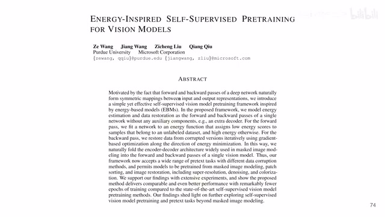
00:00:00–00:00:12 · 画面 001大家好 今天我们来快速说一篇论文 Energy-inspired self-supervised pre-training for vision models 这篇是我最近非常喜欢的一篇文章 我们直接来看
00:00:12–00:00:51 · 画面 002
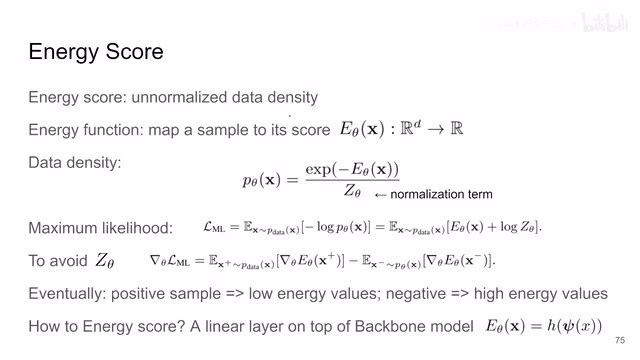
00:00:12–00:00:51 · 画面 002首先呢是这个我们介绍一个概念叫做这个 energy score 那简单来说呢就是你会有一个 energy function 这个 function 呢就是你扔一个样本进到这个 function 里面这个 function 呢会告诉你一个数这个数呢就是这个 score 然后这个 score 呢描述的就是这个样本它这个位置的这个 distribution 的这个 density 那换句话来说呢你也可以把它想成就是你这个样本究竟有多么符合当前的这个 distribution当然呢实际这个 score 呢是跟真正的 density 反过来的真正的 density 写出来的时候呢是这个样子的你看呢加了这个指数同时呢加上一个 normalization 因为它是一个 probability density 那么我们最终的目的是希望用这个θ这个参数把我们这个 energy function 呢给它求出来最终呢来描述这个实际的 data density 这样子呢有了它呢我们就可以做很多事情了那么为了优化这个 pθ呢我们来增加它的这个 log likelihood
00:00:51–00:00:52 · 画面 003
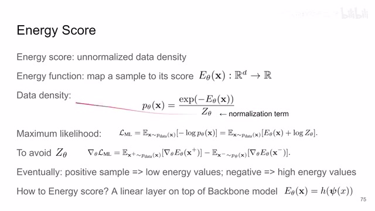
00:00:51–00:00:52 · 画面 00300:00:52–00:01:31 · 画面 004
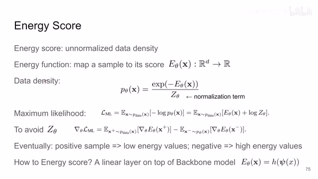
00:00:52–00:01:31 · 画面 004写出来呢就是这个样子你把采样的过程塞到这个期望里面啊然后呢这个 log 进来大概就是这样那实际的过程中呢很显然这个 normalization 这个地方啊这个 z 这个项我们是不好知道的所以呢一般情况下呢我们为了估计这个 maximum log likelihood 这些说是估计它的这个梯度啊我们就用到了这样的一个方法你可以看到呢我们从我们真实的数据中抽一个样本我们叫它正样本这个 x plus 然后把它算出一个 score 来求这个 score 对于这个θ它的梯度那么这一项呢是一个正的同时呢要减去我们一个负样本
00:01:31–00:01:32 · 画面 005
00:01:31–00:01:32 · 画面 00500:01:32–00:02:02 · 画面 006
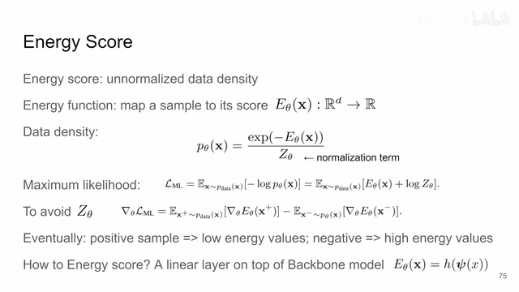
00:01:32–00:02:02 · 画面 006而这个负样本呢它就是不在这个 data distribution 里面的这个样本对吧同样呢我们也是送到我们这个 score function 里面求一个 t 度出来但是因为它的作用呢跟我们的正样本是相反的所以呢它的前面有一个负号那么通过这样一种设计呢我们就避免了去跟这个 z 相关的东西那么这个呢也是常见的训练一个 energy function 的这样一个设计希望得到的一个结果呢就是我的这个 positive sample 我在这个 distribution 里面的样本
00:02:02–00:02:03 · 画面 007
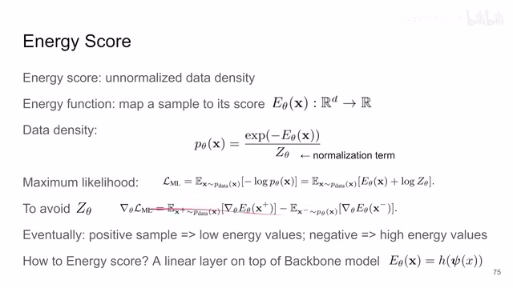
00:02:02–00:02:03 · 画面 00700:02:03–00:02:09 · 画面 008
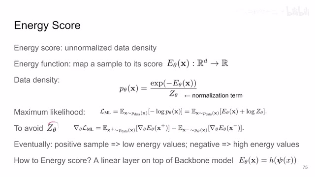
00:02:03–00:02:09 · 画面 00800:02:09–00:02:10 · 画面 009
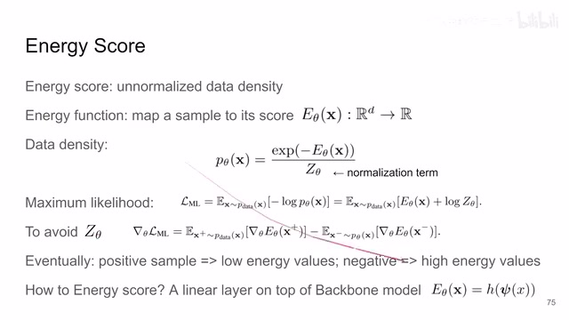
00:02:09–00:02:10 · 画面 00900:02:10–00:02:28 · 画面 010
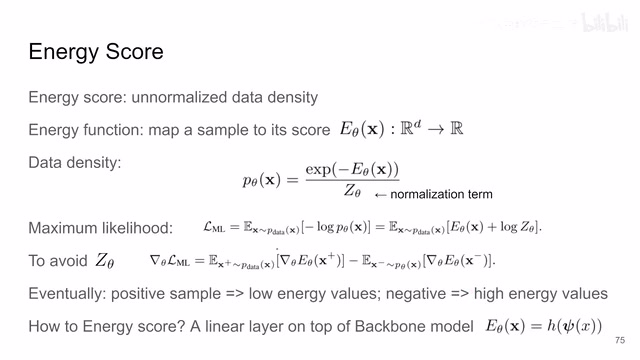
00:02:10–00:02:28 · 画面 010那它能够映射到一个 low energy value 也就是这个 low energy score 那么样本外的这个样本它就会得到一个很高的这个 energy value 这个 energy score 所以整个这一页下来我们概括来说就是我们现在定义一个 energy score 就是我们现在去学这么一个函数那么这个函数在实现中呢也很简单你在你的 backbone model 上各种比如说 transformer 对吧或者 CNN 什么的就最后那个 feature 上再额外的套上一层 linear 就可以了
00:02:28–00:02:29 · 画面 011
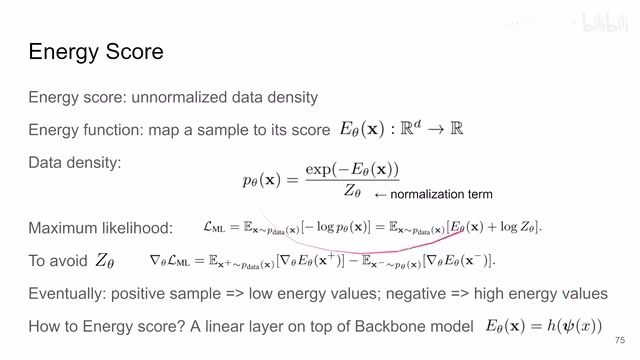
00:02:28–00:02:29 · 画面 01100:02:29–00:02:43 · 画面 012
00:02:29–00:02:43 · 画面 01200:02:43–00:02:44 · 画面 013
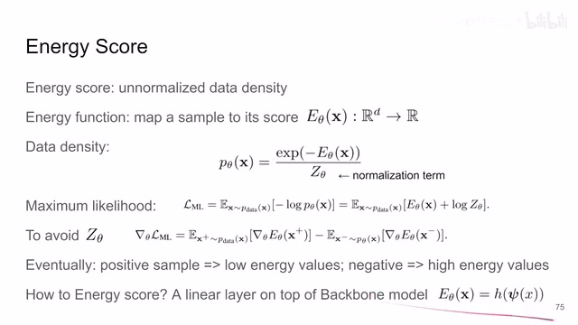
00:02:43–00:02:44 · 画面 01300:02:44–00:02:47 · 画面 014
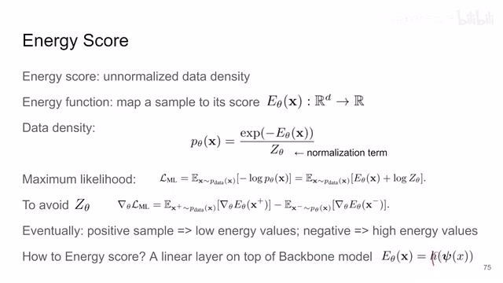
00:02:44–00:02:47 · 画面 014那么我们拿到 energy score 能干什么呢假如说它是一个很好的指示器能够告诉我们这个样本它是不是在我们的 distribution 当中那么根据这个样本的 score 它的指示我们是不是可以逐渐的把我们的样本修改比如说它原来是一个不在我们 distribution 中的样本我通过 score 的指示不断的去修改这个样本让这个样本变得更像我们的 distribution 里面
00:02:47–00:04:47 · 画面 015
00:02:47–00:04:47 · 画面 015就像一个钓鱼老板他有探鱼器探鱼器能告诉他对吧这个地方的鱼群的密度是多少他挪动一下位置对吧根据这个区域的这个鱼群密度的变化就能够向这个鱼群密度更高的地方前进就不会空军了或者你像无线电定位一样告诉你你现在的位置和你的目标距离有多远你就可以更好的向着目标前进了那么在这里呢有了这个 score 之后呢作者说我可以根据这个 energy score 它的这个梯度的方向来告诉我们如何去优化我们的当前的这个负样本让这个负样本呢就变得像我们正样本就像我们的这个 distribution 里面靠拢了那么这个基于这个 energy score 它的 gradient 优化的这个过程呢
作者这里使用了朗智万动力学这里跟 score-based diffusion model 有相似之处那篇文章我们可以找个契机后面再讲一下在这里我们就不具体的深入到这个过程里面但是它的一个大致的思想就是我有了这个规定对不对我就沿着这个规定一小步一小步的前进通过多次的小步的前进最终到达一个相对满意的 target 到达我们的这个数据的 distribution 里面那么它的这个过程就是像这样的对吧我根据上一步的结果然后根据当前这个位置上它的这个梯度来向这个梯度这个方向走一下同时呢加上一点这个随机的噪声那这个时候呢你如果α取的值很小你就不断的一步一步的去迭代就像 Diffusion 一样那最终呢你希望恢复的是一个原始的图像而你手头呢对吧恰好就有一张原始的图像你通过这两个图像恢复出来的图像跟你原始的图像做对比那么作者呢就是通过这样一种方式把自监督呢给建立起来了
00:04:47–00:05:17 · 画面 016
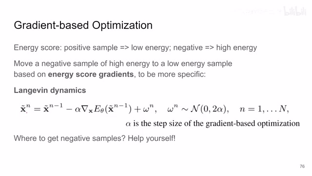
00:04:47–00:05:17 · 画面 016那么这个时候朋友就说了我们的正样本我们是知道的我们从数据集里面抓就好了对吧那我们的负样本怎么办呢这个道理很简单对吧你看 diffusion 里面就是各种 corruption 对吧这里也一样我把一张图片搞坏掉那太容易了对吧
00:05:17–00:06:13 · 画面 017
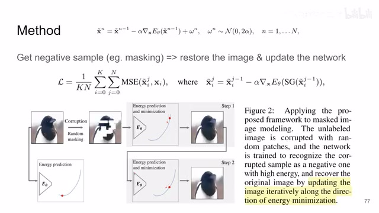
00:05:17–00:06:13 · 画面 017比如说最简单的你像这个 masked autoencoder 里面我们可以把这个图像分成一个个的 patch 然后呢丢掉一部分 mask out 一部分那么这个图像呢就变成这个样子了它呢我们希望这个 energy scoreenergy prediction 它的给的值呢是一个非常高的值然后呢经过我们刚刚说的这个朗之万的这个过程不断的根据这个 score 的这个 gradient 去迭代迭代一下最终呢把我们这个图像恢复成这个原始的图像然后呢你根据中间的每一步恢复出来的图像跟原始图像的这个差值这里用的是 MSE 你就可以把这个监督信号构建起来了其中呢这里我们算这个 score 它的这个 gradient 时候的我们要记得这一步呢是针对 x 求导我们是为了调整这个 x 而不是去调整这个θ所以呢针对这个θ的这个 t 度我们要给它停掉我们只是算针对 x 的 t 度那么这个呢就是本文核心的这个自监督的构建的过程
00:06:13–00:06:14 · 画面 018
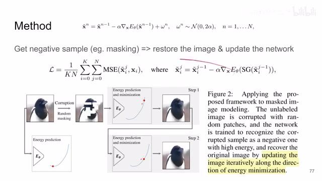
00:06:13–00:06:14 · 画面 01800:06:14–00:06:16 · 画面 019
00:06:14–00:06:16 · 画面 019很直观的一个方法对吧对比这个代码我们来看一下首先我们拿到这个图片之后加 random masking 加噪声之类的东西然后这个时候呢我们把损坏后的样本呢对吧首先断掉它的这个梯度的联系送到这个模型里面去算一下它这个地方的这个 score
00:06:16–00:08:10 · 画面 020
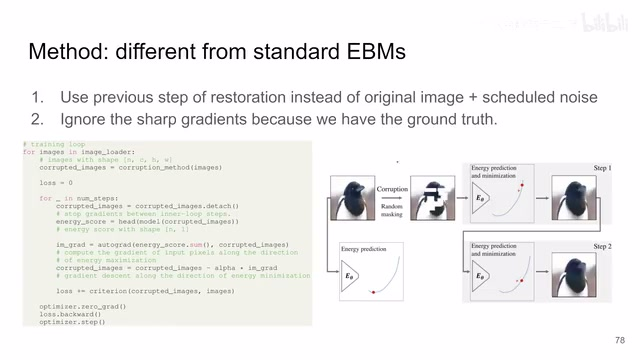
00:06:16–00:08:10 · 画面 020然后得到我们这个 score 呢相对于我们的图像去求这个梯度对吧注意这里 detach 呢是相对于我们的这个模型和我们的这个 score 这个 head 啊这些模型里面的参数我们要给它断掉我们不更新它但是呢根据这个 energy score 呢我们更新的是这个图片的本身就是我动住我的模型的参数我去调输入值啊这样一个过程那具体怎么调呢对吧有了这个梯度之后你就去点去这个α乘上这个梯度就可以了就是我们之前介绍的那个朗之万那个式子然后中间还有什么随机的噪声呢这里作者也省略掉了就是说呢让我们的这个损坏后的这个图像逐渐的去恢复向着一个这个 energy score 相对小的方向来恢复那恢复好的图像呢对吧跟原始的图像对比一下
对比出来之后算的 loss 呢就加起来，那么这个呢就是恢复的一步。那这一步呢，你就不断的去重复重复，最终呢把我们的所有的这个 loss 算出来，去优化一下我们的这个网络。那么这个呢是作者的这个训练的流程。那注意这个流程呢，作者说跟标准的这个 energy-based model 呢，它有两个显著的区别。那第一个就是我们在做这个图像的恢复的时候呢标准的 Energy Based Model 都是用我们从原图加噪声得出来一个 Noisy Image，然后扔下来作为模型的输入。这里直接是采用了上一步模型给出的结果作为模型的输入。那么第二个区别就是标准的 Energy Based Model 它们会遇到 T2 很 Sharp 的情况，但是这里作者说我们也不用担心，因为我们有 Ground Truth，我们就直接大力输奇迹。总的来说这个方法是非常简洁的一个方法
00:08:10–00:08:11 · 画面 021
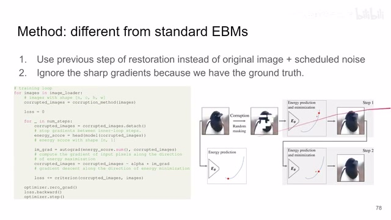
00:08:10–00:08:11 · 画面 02100:08:11–00:08:13 · 画面 022
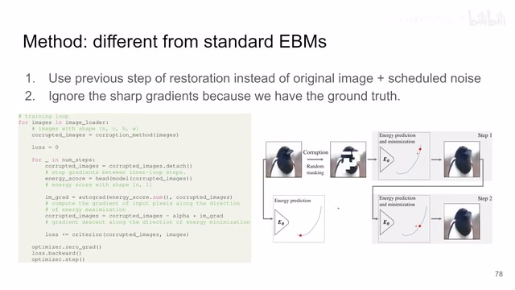
00:08:11–00:08:13 · 画面 022那么当然呢，我们之前说的这个 maskingrandom masking 对吧，它只是一个例子，你有一种方式去做我们的这个图像的这个降级去损坏这个图像。你当然做着呢，这里还试了比如说这个 super resolution 还有 denoising 还有这个 colorization 等等这些东西，你有多种多样的方式，基本上你可以试任何你想要用的方式去来这个降级这个图像
00:08:13–00:08:51 · 画面 023
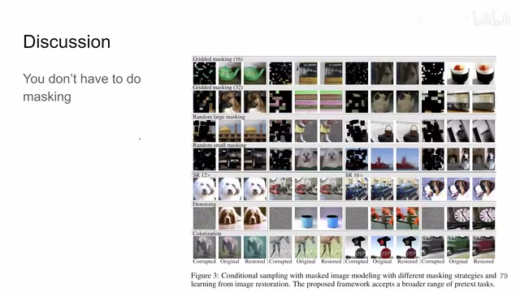
00:08:13–00:08:51 · 画面 023同时呢，这个学习框架对你前面的这个视觉模型的这个 backbone也没有什么要求，你用任何你想用的模型都可以。然后它也不会像 MAE 那样后面要接什么大的 Decoder。但这个时候有朋友会说了，你之前要做恢复的过程，你不是说要做很多步吗？对不对，你每做一步你都要前向过一次模型，它的计算量会不会非常大呢？实际上做点实验发现对吧，我这只要两步效果就不错了，同时你 Alpha 也不用 schedule 了，你也让它变成可学习的
00:08:51–00:08:59 · 画面 024
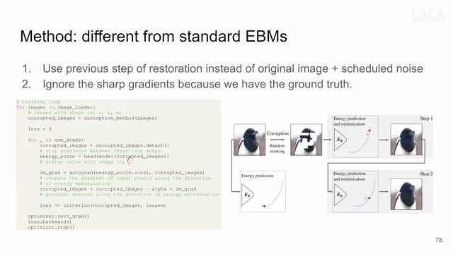
00:08:51–00:08:59 · 画面 02400:08:59–00:09:01 · 画面 025
00:08:59–00:09:01 · 画面 02500:09:01–00:09:16 · 画面 026
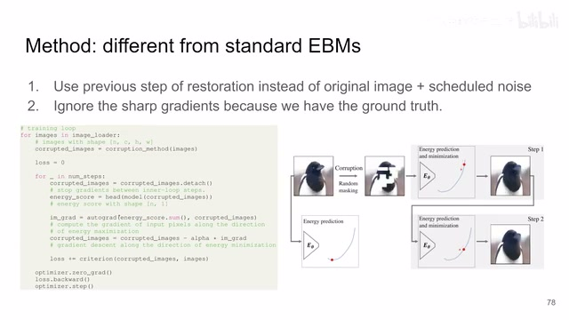
00:09:01–00:09:16 · 画面 026大家都扔在一起一块去训练就好了。那我们直接来看到结果啊，首先这里是对比的这个 MAE 只用了 100 个 epoch 的 Pretraining 和这个 fine-tuning，可以看到本文对参数的选择不是那么敏感的。然后呢还有不同的这个 Pretext Task，也就是我用什么样的方法去降级我的这个图像，可以看到不同方法的表现啊
00:09:16–00:09:17 · 画面 027
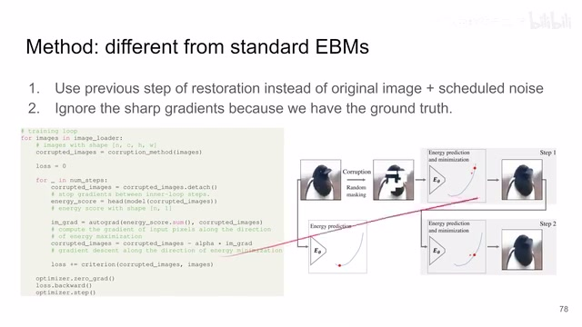
00:09:16–00:09:17 · 画面 02700:09:17–00:09:59 · 画面 028
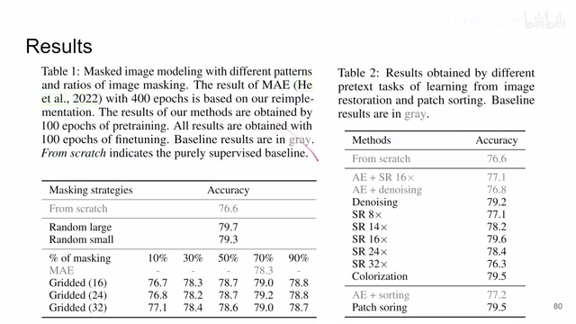
00:09:17–00:09:59 · 画面 028像这个 Patch Sorting 它这里应该是少打一个 T，它就是通过调整每个 Patch 的 PositionalEmbedding 来实现把我们这个 Patch 在这个模型里面打乱的这样一个目的，然后让我们的这个模型去找到我们 Patch 原来每个 Patch 它们相对的这个位置，这个也是一个很有意思的工作，我们后面有机会可以再介绍。那么总之你可以看到不同方法它的性能的表现
00:09:59–00:10:01 · 画面 029
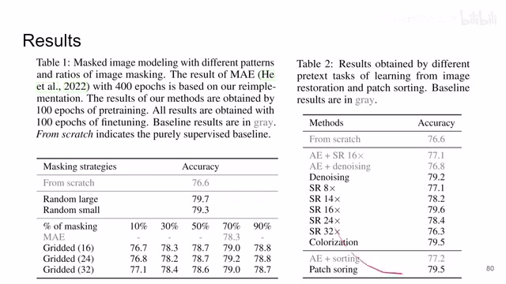
00:09:59–00:10:01 · 画面 02900:10:01–00:10:03 · 画面 030
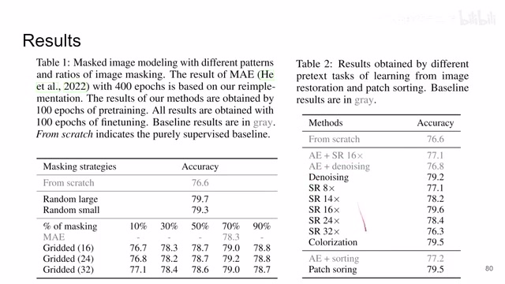
00:10:01–00:10:03 · 画面 030那么这里是对比了之前非常出名的一些 self-supervised learning 的方法，其中很多我们也都介绍过了，大家可以看一些这个数字来作为一个参考。那么关于不同的 backbone 作者也是有一些实验支持。那总的来说呢，这篇文章把自监督还有 energy base 相关这些东西给它结合起来，还是很有意思的一个方法
00:10:03–00:10:04 · 画面 031
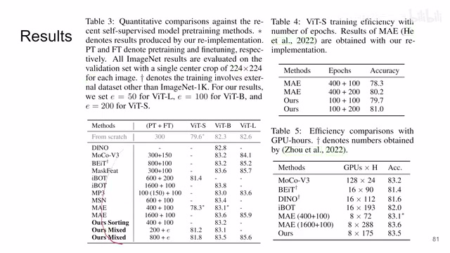
00:10:03–00:10:04 · 画面 03100:10:04–00:10:09 · 画面 032
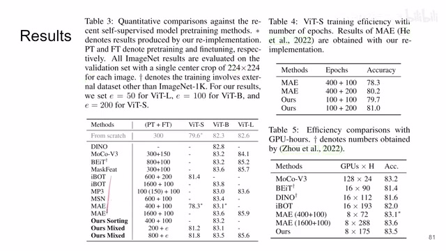
00:10:04–00:10:09 · 画面 03200:10:09–00:10:10 · 画面 033
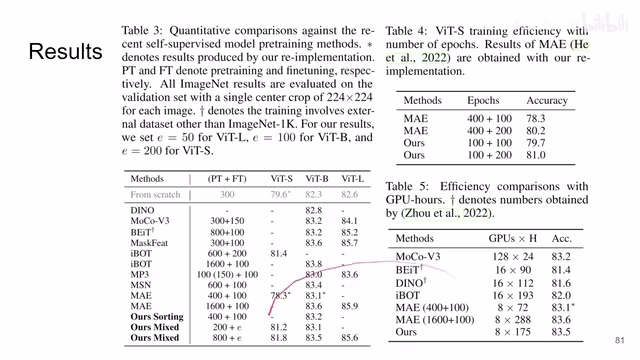
00:10:09–00:10:10 · 画面 03300:10:10–00:10:14 · 画面 034
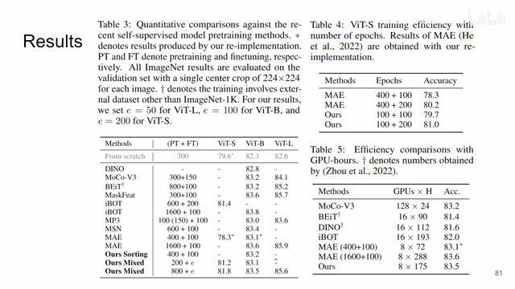
00:10:10–00:10:14 · 画面 03400:10:14–00:10:31 · 画面 035
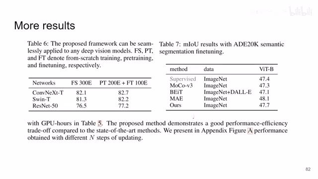
00:10:14–00:10:31 · 画面 035那么以上就是我对这篇论文的一个快速的整理。那么感谢您的收看，今天是一个相对特殊的日子，我们来说点题外话。那么在两年前的今天，我为了对抗一种巨大的悲痛，我选择开始去读论文去用更新视频的方式监督自己来读论文。那么这两年间我们大概一共涉及了 170 多篇论文，我也很幸运的是其中的一篇的作者
00:10:31–00:10:56 · 画面 036
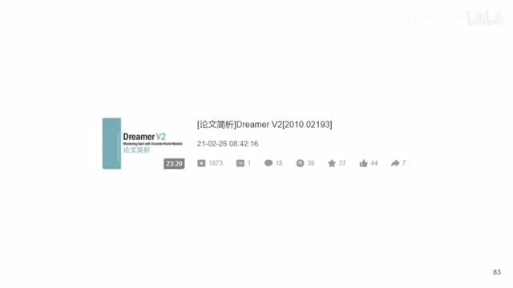
00:10:31–00:10:56 · 画面 036那么在这里呢，非常感谢各位对我读论文的一个监督对这个频道发展的支持。那我今天也是顺手在 B 站搜了一下这个自监督这个关键词，还是看到了一些我们的视频，说明这两年还是做了一点微小的工作。那么感谢大家的监督，再见
00:10:56–00:11:07 · 画面 037
00:10:56–00:11:07 · 画面 03700:11:07–00:11:07 · 画面 038
00:11:07–00:11:07 · 画面 038转写与来源说明 · 0 个自动复核提示
保留 29 个原始语音片段，0 个片段触发自动复核提示。提示仅用于定位可能的术语、重复或识别问题，不等于已确认错误。
讲解画面为源视频截图（640×360），不是可编辑 PPT 文件。全片按每秒 2 帧扫描内容变化，逐步展开页保留；连续动画保留代表画面。清晰度受源视频限制。
原视频：paper/合集_2026-10-16_表征学习/[论文简析]Energy-Inspired Self-Supervised Pretraining for Vision Models[2302.01384].mp4
SHA-256：45b986b4995d0acd4a32e7f93dfe922e9b895dfdffd0fef508973d3fa6196469
全文按视频语音与画面制作。原论文可从上方链接下载；完整资料包保留全文、原始逐字稿、字幕和校对记录。